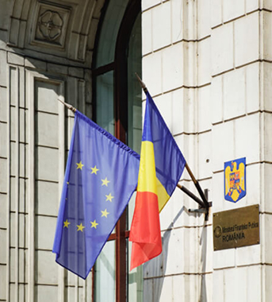

Как проходит оформление гражданства Румынии с нами
Прозрачная пошаговая процедура — без риска и бюрократии
Сопровождение на протяжении всего процесса
Шаги для получения румынского гражданства
Сопровождение на протяжении всего процесса
Этапы получения гражданства
-
Документы, которые понадобятся
-
Внутренний и загранпаспорт
-
Справка о несудимости
-
Свидетельства о рождении (ваши и родителей)
-
Документы по линии дедушек и бабушек
-
Документы на детей (если есть)
Важно учитывать несколько требований к документам. Все документы должны быть выданы не более двух лет назад, не иметь ламинации или обложек и обязательно содержать апостиль. На этапе подачи необходимо привезти с собой все оригиналы документов — копии или сканы не принимаются. Эти нюансы часто становятся причиной задержек или сложностей, если о них не знать заранее.
Именно поэтому около 80% клиентов не собирают пакет документов самостоятельно. Мы берём этот процесс на себя: проверяем каждый документ, находим и исправляем ошибки, организуем апостилирование и готовим полный пакет так, чтобы он был принят с первого раза.
-
-
Перевод и подготовка документов
Важно учитывать несколько требований к документам. Все документы должны быть выданы не более двух лет назад, не иметь ламинации или обложек и обязательно содержать апостиль. На этапе подачи необходимо привезти с собой все оригиналы документов — копии или сканы не принимаются. Эти нюансы часто становятся причиной задержек или сложностей, если о них не знать заранее.
Именно поэтому около 80% клиентов не собирают пакет документов самостоятельно. Мы берём этот процесс на себя: проверяем каждый документ, находим и исправляем ошибки, организуем апостилирование и готовим полный пакет так, чтобы он был принят с первого раза.
-
Подача в Министерство юстиции (АНЧ)
Подача документов проходит в Бухаресте, в Министерстве юстиции Румынии. День и время определяет система, поэтому вы приезжаете строго к назначенному слоту. На подачу необходимо взять с собой все оригиналы документов.
На этом этапе вы не остаётесь одни. Мы лично встречаем вас и сопровождаем вместе с адвокатом. Вам не нужно общаться с сотрудниками или разбираться в нюансах процедуры — весь процесс проходит под контролем. Подача не похожа на визовый центр: здесь не принимают решения «на глаз», а проводят полноценную юридическую проверку оснований.
После приёма документов вы получаете номер дела. С этого момента вы официально находитесь в системе и ваше право на получение румынского гражданства подтверждено юридически.
Что делает инспектор при подаче
-
Проверяет вашу личность
-
Подтверждает подлинность документов
-
Оценивает наличие законных оснований для получения гражданства
-
Фотографирует вас
-
Снимает биометрические данные и отпечатки пальцев
-
Присваивает и выдаёт номер дела
-
-
Ожидание приказа
После подачи начинается этап ожидания. В среднем он занимает от 2 до 3 лет. В это время проводится проверка по государственным базам, включая международные системы.
Мы отслеживаем статус дела и информируем вас обо всех изменениях. Параллельно вы готовитесь к сдаче присяги — времени для подготовки более чем достаточно.
-
Сдача присяги
После выхода приказа вы получаете официальное уведомление с датой присяги. Для этого необходимо повторно приехать в Бухарест.
Процедура проходит спокойно: вы зачитываете текст присяги и отвечаете на 2–3 простых вопроса на румынском языке. Мы заранее готовим вас к этому этапу и при необходимости организуем занятия с репетитором. После присяги вы получаете сертификат гражданина Румынии.
 Что происходит после присяги
После получения сертификата оформляются румынские документы:
Свидетельство о рождении — около 45 дней
-
ID-карта и прописка — по желанию, около 60 дней
-
Загранпаспорт — от 3 дней после получения свидетельства
Что вы получаете в итоге
Оформление гражданства даёт вам:
Статус гражданина ЕС
-
Румынский паспорт и ID-карту
-
Право жить, работать и учиться в странах ЕС
-
Доступ к медицине, образованию и социальным программам
-
Ответы на вопросы
Частые вопросы
Мы собрали ответы на вопросы, которые чаще всего возникают перед началом оформления.
Нет. Мы работаем по официальному договору, где фиксированы стоимость и перечень услуг. Все дополнительные расходы (например, государственные сборы) мы заранее озвучиваем и прописываем в договоре.
Мы работаем по официальному договору, где фиксированы стоимость и перечень услуг.
Мы работаем по официальному договору, где фиксированы стоимость и перечень услуг.
Мы работаем по официальному договору, где фиксированы стоимость и перечень услуг.
Мы работаем по официальному договору, где фиксированы стоимость и перечень услуг.
Мы работаем по официальному договору, где фиксированы стоимость и перечень услуг.
Мы работаем по официальному договору, где фиксированы стоимость и перечень услуг.
Мы работаем по официальному договору, где фиксированы стоимость и перечень услуг.
Найдите подходящую услугу для оформления гражданства
Профессиональное сопровождение каждого этапа: документы, подача, присяга, паспорт. Быстро, безопасно и официально.